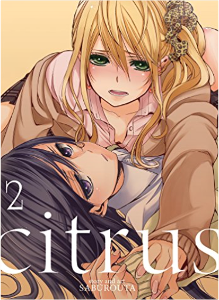

How To Run The European ParliamentMarilyn Political DESCRIPTION AND REVIEWS BY POLITICAL LEADERS:
How do you gain influence and publicity in the European Parliament? How do you compete successfully with the Council and the Commission? How can you use reporters and lobbyists to advance your political career?
How to Run the European Parliament offers a unique look behind the scenes and reveals the secret tactics and manoeuvres Members of the European Parliament need to master in order to prevail.
This brutally honest tutorial is a must-read for all MEPs, assistants, public servants, lobbyists, and journalists who want to understand how power politics is played.
JACEK SARYUSZ-WOLSKI | Vice-President of the European People’s Party
“Achieving success as an MEP, both nationally and within the EU, requires many skills - mastering the nuances of the legislative process, negotiating with impact, building networks, maximizing support and votes, organizing day-to-day functioning with optimal results, and many more. Marilyn Political's insightful tutorial captures these nuances in one book that every aspiring MEP and his collaborators should read.”
ALEXANDER GRAF LAMBSDORFF | Vice-President of the European Parliament
“Unique and impressive. An absolute must-read for all new Members of the European Parliament.”
PETRI SARVAMAA | Vice-Chair of the European Parliament’s Committee on Budgets
“Astonishing read! It's merciless, unforgiving, and so true. As an MEP I could not imagine a better guide into ways of influencing political decision-making in Brussels. I regularly go back to the advice of the book. And I make sure all my advisers and assistants know the text by heart.”
MARKUS FERBER | Vice-Chair of the European Parliament’s Committee on Economic and Monetary Affairs
“How to Run the European Parliament provides an informed insight on what happens behind the curtains. From negotiation strategies to shaping public perceptions - this book is the perfect read if you want to gain an in-depth understanding of how European policy making actually works.”
LINNÉA ENGSTRÖM | Vice-Chair of the European Parliament’s Committee on Fisheries
“This book will teach you the mind-set and psychology of the European Parliament. Being a European politician means: relying on good advisers and having the confidence and strength to be patient, generous, and trustworthy. The road to success lies in hard work - and making the right choices. This book will give you exactly the push you need, and the direction to set you on the right path.”
ANDREY NOVAKOV | Member of the European Parliament
“One of the most get-to-the-point, useful, and must-have political books I have in my library.”
IVAN ŠTEFANEC | Member of the European Parliament
“The book is a very useful and enjoyable reading, particularly for newcomers to the European Parliament. It is a good overview of parliamentarian activities. It reassured me about what I was doing right and where I should improve.”
JONÁS FERNÁNDEZ | Member of the European Parliament
“This book makes for fascinating - and funny - reading. More importantly, it is quite useful, particularly for newcomers. I highly recommend it to any new MEP as absolutely essential. It provides quite a number of practical suggestions, and not to be underestimated, a fair amount of laughing, something that should never be in short supply when working at the European Parliament.”
SANDER LOONES | Vice-Chair of the European Parliament’s Committee on Economic and Monetary Affairs
“The European House of Cards, but with a healthy portion of pragmatism.”
LOOK INSIDE THE BOOK:
www.marilynpolitical.com/publications Crash Override: How Gamergate (Nearly) Destroyed My Life, and How We Can Win the Fight Against Online HateZoe Quinn You've heard the stories about the dark side of the internet—hackers, #gamergate, anonymous mobs attacking an unlucky victim, and revenge porn—but they remain just that: stories. Surely these things would never happen to you.
Zoe Quinn used to feel the same way. She is a video game developer whose ex-boyfriend published a crazed blog post cobbled together from private information, half-truths, and outright fictions, along with a rallying cry to the online hordes to go after her. They answered in the form of a so-called movement known as #gamergate—they hacked her accounts; stole nude photos of her; harassed her family, friends, and colleagues; and threatened to rape and murder her. But instead of shrinking into silence as the online mobs wanted her to, she raised her voice and spoke out against this vicious online culture and for making the internet a safer place for everyone.
In the years since #gamergate, Quinn has helped thousands of people with her advocacy and online-abuse crisis resource Crash Override Network. From locking down victims' personal accounts to working with tech companies and lawmakers to inform policy, she has firsthand knowledge about every angle of online abuse, what powerful institutions are (and aren't) doing about it, and how we can protect our digital spaces and selves.
Crash Override offers an up-close look inside the controversy, threats, and social and cultural battles that started in the far corners of the internet and have since permeated our online lives. Through her story—as target and as activist—Quinn provides a human look at the ways the internet impacts our lives and culture, along with practical advice for keeping yourself and others safe online. Hate to Want You: Forbidden HeartsAlisha Rai Alisha Rai, one of contemporary romance’s brightest stars, makes her Avon Books debut with the first novel in the sexy Forbidden Hearts series!
One night. No one will know.
That was the deal. Every year, Livvy Kane and Nicholas Chandler would share one perfect night of illicit pleasure. The forbidden hours let them forget the tragedy that haunted their pasts—and the last names that made them enemies.
Until the night she didn’t show up.
Now Nicholas has an empire to run. He doesn’t have time for distractions and Livvy’s sudden reappearance in town is a major distraction. She’s the one woman he shouldn’t want . . . so why can’t he forget how right she feels in his bed?
Livvy didn’t come home for Nicholas, but fate seems determined to remind her of his presence—and their past. Although the passion between them might have once run hot and deep, not even love can overcome the scandal that divided their families.
Being together might be against all the rules . . . but being apart is impossible.
One of Amazon's Best Romances of the Month & Best Romances of 2017! How to Renounce Your U.S. Citizenship in Two Easy StepsGlen Lee Roberts The author writes from a position of unique experience: “That day, June 21, 2013, I had walked into the US Embassy an American Citizen and walked out without any nationality, Stateless: an Earthling.” A real life "man without a country". He brings the requirements and process of renouncing U.S. Citizenship down to earth. He takes the politics, confusion, and fear out of the process. After reading this book you'll know exactly what you need to do, and how to do it. You'll also be amazed at how quick and easy it is. Included are copies of all of the government forms he filed in the process, as well as parts of the U.S. State Department's Foreign Affairs Manual which express the process form the government's viewpoint. Of course, a copy of his "Certificate of Loss of Nationality of the United States (CLN)" is also included, signed, sealed and stamped by U.S government authorities. He cannot help you decide if you should renounce your citizenship or not. He takes you through the process so you can exercise your rights if you decide to. You too, will be able to walk into a U.S. Embassy as an American and leave as a “foreigner”. With one signature, step outside of all the politics and drama associated with the United States. Remember, all rights and privileges and all duties and allegiance you had as an American are gone. You've been born again! Why renounce your U.S. Citizenship? While it seems that a large portion of the world's population wants to move to the United States and become a citizen there, there is a movement of another kind too. As throughout the history of the United States, some American's chose to leave the country and renounce their citizenship. That process based on my personal experiences is straightforward and simple. One aspect of the process that is completely irrelevant is the question: Why? It is not asked, and if answered not relevant to the process. It is simply your right to renounce, and the choice is yours alone to make. As a practical matter, everyone that learns of your decision will ask you why! For me, the short answer is simply that “I outgrew the United States.” The long answer would start with something along the lines of: “For roughly 20 years, basically my entire adult life in the United States I was in conflict. My conflict was with every nature of 'authority', local, state, corporate, prestigious universities as well as at a federal level including the CIA, the FBI, the U.S. Military and even the President of the United States. The conflict was a result of my perspectives on privacy, surveillance, free of information and related topics. Really, it was my expression of my viewpoints on those topics which was the conflict.” Completing the long answer would return me to that era of conflict and bring the fear and anger back to myself, as well as inflict it on you. Life offers much more interesting adventures and I am off to explore them now. Christian Voices in Unitarian Universalism: Contemporary EssaysKathleen Rolenz Fifteen personal stories from laity and clergy alike show what it means to be a Unitarian Universalist Christian today.These men and women arrive at their faith by many paths—influenced by the Bible, Jesus Christ Superstar and even the Bernstein Mass. Here is a fresh and much-needed look at UU Christians, who, for decades, have kept the work and spirit of Christianity alive in our liberal religion. Citrus Vol. 3Saburouta Yuzuko Aihara, a high school girl whose main interests are fashion, friends and having fun, is about to get a reality check. Due to her mom's remarriage, Yuzu has transfered to a new, all-girls school that is extemely strict. Her real education is about to begin.
From Day One, happy-go-lucky Yuzu makes enemies, namely the beautiful yet stern Student Council President Mei. So what happens when a dejected Yuzu returns home and discovers the shock of her life: that Mei is actually her new step-sister who has come to live with her? Even more surprising, when Mei catches Yuzu offguard and kisses her out of the blue, what does it all mean? Citrus Vol. 4Saburouta Citrus is an ongoing yuri manga series that offers a bittersweet love story coupled with gorgeous artwork.
Ever since their first kiss, Yuzu can’t stop thinking about Mei, her stern, sexy step-sister. Now Mei seems to have done a total one-eighty, ignoring Yuzu at every turn and giving her the cold shoulder.
Yuzu can’t understand why Mei is acting so distant but she decides to try and patch things up with her step-sis while on a school trip to Kyoto. However, she’s not the only one who has her eye on Mei. Sara, a vivacious girl with boundless energy, happens to bump into Mei and falls in love with her at first sight. To make matters worse, Sara’s twin sister, Nina, is willing to do whatever it takes to ensure that Sara gets what she wants.
Can Yuzu fix things between herself and Mei, or will the twins break up their bond for good? | Citrus Vol. 5Saburouta For fans of Girl Friends and Strawberry Panic comes the New York Times Bestselling yuri series!
Yuzuko Aihara, a high school girl whose main interests are fashion, friends, and having fun, is about to get a reality check. Due to her mom’s remarriage, Yuzu has transfered to a new, all-girls school that is extemely strict. Her real education is about to begin.
From Day One, happy-go-lucky Yuzu makes enemies, namely the beautiful yet stern Student Council President Mei. So what happens when a dejected Yuzu returns home and discovers the shock of her life: that Mei is actually her new step-sister who has come to live with her? Even more surprising, when Mei catches Yuzu off-guard and kisses her out of the blue, what does it all mean? Citrus Vol. 6Saburouta "First published in Japan in 2017 by Ichijinsha Inc., Tokyo."—Copyright page. Citrus Vol. 7Saburouta SECRET LOVE
It’s summer break–but instead of spending her vacation with Mei, Yuzu is stuck in summer school. On her first day, she meets a strange girl with an uncanny talent for observation. Will the new girl discover Yuzu’s secret relationship with Mei…?! Citrus, Vol. 1Saburouta For fans of Girl Friends and Strawberry Panic comes a breathtaking new yuri series!
Aihara Yuzu, a high school girl whose main interests are fashion, friends, and having fun, is about to get a reality check. Due to her mom's remarriage, Yuzu has transferred to a new, all-girls school that is extremely strict. Her real education is about to begin.
From day one, happy-go-lucky Yuzu makes enemies, namely the beautiful yet stern student council president Mei. So what happens when a dejected Yuzu returns home and discovers the shock of her life: that Mei is actually her new step-sister who has come to live with her? Even more surprising, when Mei catches Yuzu off guard and kisses her out of the blue, what does it all mean?  Citrus, Vol. 2Saburouta A yuri tale like no other, now a New York Times manga best seller!
Yuzu and Mei may be step-sisters, but that's about all the two girls have in common. Yuzu is an outgoing girly-girl who cares more about fashion than school work, while Mei is the serious student council president. Yet despite their differences, or perhaps because of them, the two girls find themselves drawn to each other...
Mei has been running herself ragged trying to oversee the school, and Yuzu is worried about her. When Mei's dad comes home from a business trip, however, it looks like the cavalry has arrived. Unfortunately, his presence opens up old wounds between father and daughter, and Yuzu finds herself caught in the middle. Will Yuzu put aside her feelings for Mei to help fix this family feud? Real Bout High School #1Reiji Saiga In a school where martial arts are standard curriculum, Samurai Girl Ryoko is the top fighter and most popular student around or is she? Things change when the uncouth fighter Shizuma Kusanagi transfers in from Kansai. He may not have the grace of Ryoko, but his amazing fighting abilities could make him the most dominant martial artist at Daimon High. Principal Todo encourages rivalry between the competitors, setting up a dangerous "K-Fighting" tournament where even the teachers can join in and settle once-and-for-all just who is the top dog on campus. The Speech: A Historic Filibuster on Corporate Greed and the Decline of Our Middle ClassBernie Sanders On Friday, December 10, 2010, Vermont Senator Bernie Sanders walked on to the floor of the United States Senate and began speaking. It turned out to be a very long speech, lasting over eight and a half hours. And it hit a nerve. Millions followed the speech online until the traffic crashed the Senate server. A huge, positive grassroots response tied up the phones in the senator’s offices in Vermont and Washington. President Obama reportedly held an impromptu press conference with former President Clinton to deflect media attention away from Sander' speech. Editorials and news coverage appeared throughout the world.
In his speech, Sanders blasted the agreement that President Obama struck with Republicans, which extended the Bush tax cuts for millionaires and billionaires, lowered estate tax rates for the very, very rich, and set a terrible precedent by establishing a "payroll tax holiday" diverting revenue away from the Social Security Trust Fund, threatening the fund’s very future. But the speech was more than a critique of a particular piece of legislation. It was a dissection of the collapse of the American middle class and a well-researched attack on corporate greed and on public policy which, over the last several decades, has led to a huge growth in millionaires even as the United States has the highest rate of childhood poverty in the industrialized world. It was a plea for a fundamental change in national priorities, for government policy that reflects the needs of working families, and not just the wealthy and their lobbyists.
Finally, Sanders' speech-published here in its entirety with a new introduction by the senator-is a call for action. It is a passionate statement informing us that the only people who will save the middle class of this country is the middle class itself, but only if it is informed, organized, and prepared to take on the enormously powerful special interests dominating Washington. |


 Made with Delicious Library
Made with Delicious Library